SC-FEGAN: Face Editing Generative Adversarial Network with User’s Sketch and Color Youngjoo Jo Jongyoul Park ETRI South Korea frun.youngjoo,jongyoulg@etri.re.kr
SC-FEGAN 使用用户输入的草图和颜色进行脸部编辑生成对抗网络
Youngjoo Jo Jongyoul Park
ETRI
South Korea
frun.youngjoo,jongyoulg@etri.re.kr
#摘要
我们提出了一种新颖的图像编辑系统，可以在用户提供任意形状的蒙版，草图和颜色作为输入时生成图像。 我们的系统包括端到端可训练的卷积网络。 与现有方法相反，我们的系统完全利用具有颜色和形状的任意形状用户输入。 这允许系统响应用户的草图和颜色输入，使用它作为生成图像的指南。 在我们的特定工作中，我们训练的网络具有额外的风格损失[3]，这使得即使在图像的大部分被移除情况下可以生成更加逼真的结果。 我们提出的网络架构SC-FEGAN非常适合使用直观的用户输入生成高质量的合成图像。
#1. 引言
生成对抗网络（GAN）的图像补全是计算机视觉中高度认可的主题。 随着图像交换成为当今日常通信中的常见介质媒体，在最小图像补全特征（痕迹）上对生成图像中的真实感的需求增加。 这种需求反映在社交媒体统计数据上。 但是，大多数图像编辑软件都需要专业知识，例如知道在特定情况下使用哪些特定工具，以便按照我们想要的方式有效地修改图像。 相反，响应用户输入的图像补全方法将允许新手根据需要容易地修改图像。 类似地，即使图像中存在擦除部分，我们提出的系统也能够轻松生成高质量的人脸图像，前提是草图和颜色作为输入。
在最近的工作中，已经使用基于深度学习的图像补全方法来恢复图像的擦除部分。最典型的方法是使用普通（方形）蒙版，然后使用编码器解码器生成器恢复遮挡区域。然后使用全局和局部鉴别器来估计结果是真实的还是假的[5,9]。然而，该系统限于低分辨率图像，并且所生成的图像在遮挡区域上具有令人尴尬的边缘。此外，修复区上合成图像经常达不到用户的期望，因为生成器从未被给予任何用户输入以用作指导。改进此限制的一些工作包括Deepfillv2 [17]，一种利用用户草图作为输入的工作，以及GuidedInpating [20]，它将另一个图像的一部分作为输入来恢复缺失的部分。但是，由于Deepfillv2不使用颜色输入，因此合成图像中的颜色通过来自从训练数据集学习的先前分布的推断来进行计算。 Guided-Inpating使用其他图像的一部分来恢复已删除的区域。然而，很难恢复细节，因为这样的过程需要推断用户偏好的参考图像。最近的另一项工作Ideepcolor [19]提出了一种系统，它接受用户输入的颜色作为参考，以创建黑白图像对应的彩色图像。但是，Ideepcolor中的系统不允许编辑对象结构或恢复图像上已删除的部分。在另一项工作中，引入了一个面部编辑系统FaceShop [12]，它接受草图和颜色作为用户输入。但是，FaceShop用作生成合成图像的交互系统有一些限制。首先，它利用随机矩形和 可旋转蒙版来擦除那些由局部和全局鉴别器中使用的区域。这意味着局部鉴别器必须调整 修复的局部补丁 的大小以接受拟合输入尺寸，并且调整大小的过程中将使图像的擦除部分和剩余部分中的信息失真。结果，所产生的图像在修复部分将具有尴尬（明显的？）的边缘。其次，如果太多区域被擦除，FaceShop会产生不合理的合成图像。通常，当给定整个头发部分被擦除的图像时，系统会以扭曲的形状恢复它。
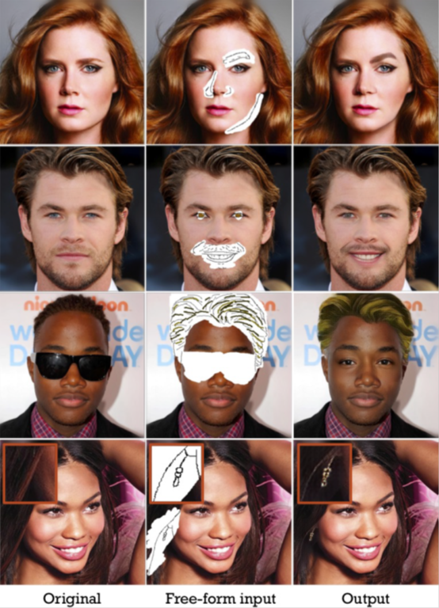
图1.我们系统的面部图像编辑结果。 它可以采取任意形状的输入，包括面具，草图和颜色。 对于每个示例，它表明我们的系统使用户可以轻松编辑脸部的形状和颜色，即使用户想要完全改变发型和眼睛（第三行）。 有趣的是，用户可以通过我们的系统编辑耳环（第四行）。
为了解决上述限制，我们提出了一种具有全卷积网络的SC-FEGAN，能够进行端到端的训练。 我们提出的网络使用SN-patchGAN [17]鉴别器来解决和改善尴尬的边缘。 该系统不仅具有一般的GAN损失，而且还具有风格损失，即使在大面积缺失的情况下也可以编辑面部图像的各部分。 我们的系统使用用户的自由形状输入创建高质量的逼真合成图像。 草图和颜色的任意形状域输入也有一个有趣的叠加效应，如图1所示。总之，我们做出以下贡献：
我们提出一种类似于Unet [13]的网络体系结构，带有门控卷积层[17]。 对于训练和推理阶段，这种架构更容易，更快捷。 与我们案例中的粗糙-精细网络相比，它产生了优越而细致的结果。
We created a free-form domain data of masks, color and sketch. This data is used for making incomplete image data for training instead of stereotyped form input.
我们创建了蒙版，颜色和草图的自由格式域数据。 该数据用于 使 不完整图像数据用于训练 而不是刻板形式的输入。 我们应用了SN-patchGAN [17]鉴别器，并以额外的风格损失训练了我们的网络。 该应用程序涵盖了大部分被擦除的情况，并且在管理蒙版边缘时表现出稳健性。 它还允许生成所生成图像的细节，例如高质量的合成发型和耳环。
#2. Related Work
交互式图像修改具有广泛的历史，主要涉及使用手工特征而非深度学习的技术。 这种优势反映在商业图像编辑软件和我们的使用实践中。 因为大多数商业图像编辑软件使用定义好的操作，所以典型的图像修改任务需要专业知识来策略性地应用图像的变换组合。 除了专业知识，用户还需要花费很长的工作时间来生产精致的产品。 因此，传统方法对于非专家来说是不利的，并且用于产生高质量结果是繁琐的。 除了这些传统的建模方法之外，通过使用大数据集训练生成模型，GAN研究方面的最新突破已经开发了几种补全，修改和转换图像的方法。
在本节中，我们将讨论使用深度学习流行的图像编辑方法中的 图像补全和图像转换领域的几项工作。
##2.1. Image Translation
用于图像翻译的GAN首先被提出用于学习两个数据集[21,6]之间的图像域变换。 Pix2Pix [6]提出了一个系统使用了一种数据集，该数据集由成对图像组成，可用于创建模型，这种模型或将分割标签转换为原始图像，或将草图转换为图像，或将黑白图像转换为彩色图像。 但是该系统要求图像和目标图像必须成对存在于训练数据集中，以便学习域之间的变换。 CycleGAN [21]提出了对这种要求进行改进的建议。 给定没有目标图像的目标域，在转换原 域中图像时，目标域中存在虚拟结果。 如果再次反转虚拟结果，则2次反转后的结果必须是原始图像。 因此，它需要两个生成器来完成转换任务。
最近，在域到域更改之后，一些研究工作已经展示了 可采用用户输入以将所需方向效果？添加到生成结果的系统。 StarGAN [2]使用单个生成器和鉴别器通过域标签训练将输入图像灵活地转换为任何期望的目标域。 Ideepcolor [19]是作为一种系统引入的，该系统通过将用户所需的颜色作为蒙版将单色图像转换为彩色图像。 在这些工作中，与用户输入交互的图像变换已经表明，可以通过将载有用户输入的图像输入到生成器来学习用户输入。
##2.2. Image Completion
图像补全领域有两个主要挑战：1）填充图像中的删除区域，2）在修复区域中正确反映用户输入。 在之前的研究中，GAN系统探索了生成原来有擦除区域的完整图像的可能性[5]。 它使用来自U-net [13]结构的发生器并利用局部和全局鉴别器。 鉴别器分别确定在新填充的部分图像和完整的重建图像上是真实的还是假的。 Deepfillv1 [18]也使用矩形蒙版和全局和局部鉴别器模型来表明上下文关注层广泛地改善了性能。 然而，全局和局部鉴别器仍然在已修复部分的边界上产生尴尬的区域。
在后续研究中Deepfillv2 [17]，引入了任意形状蒙版和SN-patchGAN，代替现有的矩形蒙版，用单个鉴别器代替全局和局部鉴别器。此外，还提出了学习遮挡区域特征的门控卷积层。此图层可以通过训练自动从数据中显示蒙版，这使网络能够在结果上反映用户输入的草图
我们在下一节中描述的网络不仅允许使用草图而且还使用颜色数据作为编辑图像的输入。即使我们使用U-net结构而不是像Deepfillv1,2 [5,17]那样的粗-细网结构，我们的网络也可以生成高质量的结果，而无需复杂的训练计划，也不需要其他复杂的层。
#3. Approach
在本文中，我们描述了所提出的SC-FEGAN，一种基于神经网络的人脸图像编辑系统，并且还描述了用于制作输入批量数据的方法。该网络可以端到端地进行训练，并生成具有逼真纹理细节的高质量合成图像。在3.1节中，我们讨论了制作训练数据的方法。在3.2节中，我们描述了我们的网络结构和损失函数，它们允许从草图和颜色输入中提取特征，同时实现训练的稳定性。
 The color maps are generated by median color of segmented areas from using GFC [9].
图2.草图和颜色域数据集以及批处理的输入。 我们使用HED边缘检测器提取草图[16]。 使用GFC [9]，通过分割区域的中间颜色生成颜色图。 网络的输入包括不完整的图像，蒙版，草图，颜色和噪声。
The color maps are generated by median color of segmented areas from using GFC [9].
图2.草图和颜色域数据集以及批处理的输入。 我们使用HED边缘检测器提取草图[16]。 使用GFC [9]，通过分割区域的中间颜色生成颜色图。 网络的输入包括不完整的图像，蒙版，草图，颜色和噪声。
##3.1. Training Data
合适的训练数据是提高网络训练性能和增加对用户输入的响应性的非常重要的因素。为了训练我们的模型，我们在几个预处理步骤之后使用了CelebA-HQ [8]数据集，如下所述。我们首先随机选择2组29,000张用于训练的图像和1,000张用于测试的图像。在获得草图和颜色数据集之前，我们将图像的大小调整为512 x 512像素。
为了更好地表达面部图像中眼睛的复杂性，我们使用基于眼睛位置的任意形状蒙版来训练网络。此外，我们通过使用任意形状的蒙版和面部分割GFC [9]创建了适当的草图域和颜色域。 这是一个至关重要的步骤，使我们的系统能够为用户输入手绘案例产生有说服力的结果。我们在输入数据中随机将蒙版应用于头发区域，因为它与脸部的其他部分相比具有不同的属性。我们在下面讨论更多细节。
Free-form masking with eye-positions 具有眼睛位置的任意形状蒙版
我们使用类似于Deepfillv2 [17]中提出的蒙版方法来制作不完整的图像。然而，当对面部图像进行训练时，我们随机应用一个以眼睛位置为起点的自由绘制的面具，以表达眼睛的复杂部分。我们还使用GFC[9]随机添加了头发蒙版。算法1中描述了细节。
Sketch & Color domain 草图和颜色域
-------------------------------------------------------------------------
Algorithm 1 Free-form masking with eye-positions
-------------------------------------------------------------------------
maxDraw, maxLine, maxAngle, maxLength are hyperparameters
GFCHair is the GFC for get hair mask of input image
Mask=zeros(inputSize,inputSize)
HairMask=GFCHair(IntputImage)
numLine=random.range(maxDraw)
for i=0 to numLine do
startX = random.range(inputSize)
startY = random.range(inputSize)
startAngle = random.range(360)
numV = random.range(maxLine)
for j=0 to numV do
angleP = random.range(-maxAngle,maxAngle)
if j is even then
angle = startAngle+angleP
else
angle = startAngle+angleP+180
end if
length = random.range(maxLength)
Draw a line on Mask from point (startX, startY)
with angle and length.
startX = startX + length * sin(angle)
startY = stateY + length * cos(angle)
end for
Draw a line on Mask from eye postion randomly.
end for
Mask = Mask + HairMask (randomly)
---------------------------------------------------------------------------------------
对于这部分，我们使用了类似于FaceShop [12]中使用的方法。但是，我们排除了将草图数据的位图转换为矢量图形的AutoTrace [15]。我们使用HED [16]边缘检测器生成与用户输入相对应的草图数据，以修改面部图像。之后，我们平滑了曲线并擦除了小边缘。为了创建颜色域数据，我们首先通过应用大小为3的中值滤波创建模糊图像，we first created blurred images by
applying a median filtering with size 3 followed by 20 application of bilateral filter.然后应用双边滤波器来。之后，使用GFC [9]对面部进行分割，并将每个分割的部分替换为相应部分的中间中值median颜色。在为色域创建数据时，没有使用直方图均衡，目的是为了避免光反射和阴影造成的颜色污染。然而，不考虑光干涉引起的模糊，因为用户在草图域中表达脸部的所有部分更加共鸣，所以在从域数据创建草图时使用了直方图均衡。更具体地说，在直方图均衡之后，我们应用HED从图像中获得边缘。然后，我们平滑了曲线并擦除了小的对象（objects）。最后，我们将蒙版相乘，采用类似于先前任意形状蒙版的处理，以及彩色图像并获得彩色刷图像。有关我们数据的示例，请参见图2。
##3.2. Network Architecture
受近期图像补全研究[5,17,12]的启发，我们的补全网络（即发生器）基于编码器 - 解码器架构，如U-net [13]，我们的鉴别网络基于SN-patchGAN [17]。我们的网络结构可产生高质量的合成结果，图像大小为512x 512，同时实现稳定和快速的训练。我们的网络也像其他网络一样同时训练生成器和鉴别器。生成器接收具有用户输入的不完整图像以在RGB通道中创建输出图像，并将输出图像的遮挡遮挡区域插入到不完整的输入图像中以创建完整图像。鉴别器接收完成的图像或原始图像（没有遮挡）以确定给定输入是真实的还是假的。在对抗训练中，鉴别器的额外用户输入也有助于提高性能。此外，我们发现与一般GAN损失不同的额外损失对于恢复大的擦除部分是有效的。我们的网络详情如下所示。
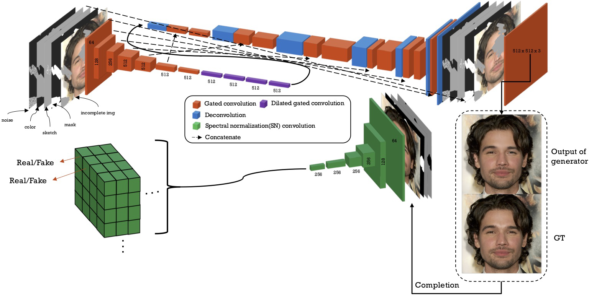 图3. SC-FEGAN的网络架构。 在输入和输出之外的所有卷积层之后应用LRN。 我们使用tanh作为生成器输出的激活函数。 我们使用SN卷积层[11]作为鉴别器。
生成器
图3详细显示了我们的网络架构。我们的发生器基于U-net [10]，所有卷积层都使用门控卷积[17]，使用3x3大小的卷积核。在除了其他软门之外的特征映射卷积层之后应用局部信号归一化（LRN）[8]。 LRN应用于除输入和输出层之外的所有卷积层。我们的发生器的编码器接收大小为512 x512 x 9的输入张量：具有要被编辑的有移除区域的不完整RGB通道图像，描述被移除部分的结构的二进制草图，RGB颜色笔划图，二值蒙版和噪音（见图2）。编码器使用2个步幅的卷积核对输入进行7次下采样，然后在上采样之前进行膨胀卷积。
解码器使用转置卷积进行上采样。然后，添加跳线连接以允许与具有相同空间分辨率的先前层进行连接。除了使用tanh函数的输出层之外，我们在每一层之后使用了leaky ReLU激活函数。总的来说，我们的生成器由16个卷积层组成，网络的输出是与输入（512 x 512）相同大小的的RGB图像。在将损失函数应用于输入图像之前，我们用输入图像替换了蒙版之外的剩余图像部分。这种替换允许生成器专门在编辑区域上进行训练。我们的生成器使用在PartialConv [10]中引入的损失函数训练：逐个像素损失，感知损失，风格损失和总方差损失。还使用通用GAN损失函数。
鉴别器
我们的鉴别器具有SNPatchGAN [17]结构。与Deepfillv2 [17]不同，我们没有对GAN损失应用ReLu函数。我们还使用了3 x 3大小的卷积核并应用了梯度惩罚损失项。我们添加了一个额外的术语，以避免鉴别器输出接近零值的补丁。我们的整体损失函数如下所示：


我们的生成器用LG训练，鉴别器用LD训练。 D（I）是给定输入I的鉴别器的输出。在编辑诸如发型的大区域时，额外的损失，Lsytle和Lpercept是关键的。 每种损失的细节描述如下。 真实图像Igt与发生器Igen的输出之间的L1距离的Lper-pixel计算为
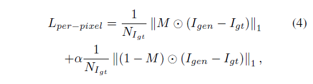
其中，Na是特征a的元素个数，M是二元蒙版图，Igen是生成器的输出。 我们使用因子α> 1来增加擦除部分的损失的权重。 感知损失Lpercept也计算L=–1距离，但是在使用在ImageNet上预先训练过的VGG-16 [14]将图像投影到特征空间之后。 它计算为
 这里， 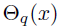是VGG-16 [14]的第q层的特征图，给定输入x，Icomp是Igen的完成图像，非擦除部分直接设置为真实图像。 q是从 VGG-16中的选定的图层，我们使用了pool1， pool2和pool3的层;。 样式损失使用Gram矩阵比较两个图像的内容。 我们计算风格损失为
这里， 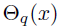是VGG-16 [14]的第q层的特征图，给定输入x，Icomp是Igen的完成图像，非擦除部分直接设置为真实图像。 q是从 VGG-16中的选定的图层，我们使用了pool1， pool2和pool3的层;。 样式损失使用Gram矩阵比较两个图像的内容。 我们计算风格损失为

其中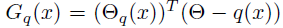 是用于在VGG-16的每个特征图上执行自相关的Gram矩阵。 当特征具有形状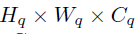 时，Gram矩阵的输出具有形状 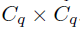
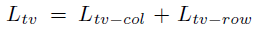 是快速神经风格[7]建议的总变异损失，用于改善感知损失项下的棋盘伪影。 它计算为
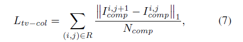
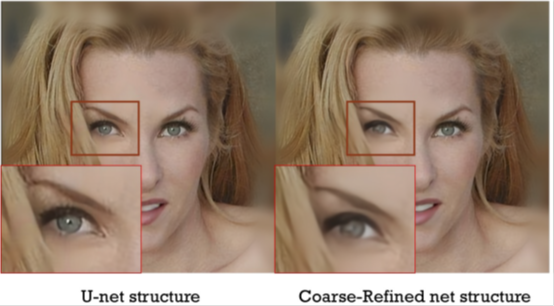
图4.当移除眼睛区域时，我们使用U-net（左）和粗 - 精网（右）的结果。
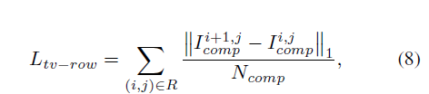 其中R是擦除部分的区域。 WGANGP [4]损失用于改进训练并计算为
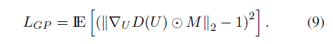 这里，U是沿着 来自Icomp的鉴别器输入和Igt之间的直线 均匀采样的数据点。 在我们的案例中，这个术语对合成图像的质量至关重要。 我们用= 0 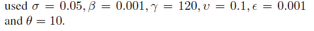
#4. Results
在本节中，我们将消融研究与最近的相关工作进行比较，然后是面部编辑结果。 所有实验均在具有Tensorflow [1] v1.12，CUDA v10，Cudnn v7和Python 3的NVIDIA（R）Tesla（R）V100 GPU和Power9@2.3GHz CPU上执行。 测试，无论输入的大小和形状如何，分辨率为512 X 512 的图片，GPU上平均需要44ms，CPU上平均需要53ms，。 源代码和更多结果显示在https://github.com/JoYoungjoo/SC-FEGAN。
https://github.com/JoYoungjoo/SC-FEGAN.
##4.1. Ablation Studies and Comparisons

Figure 5. 在有和没有VGG 损失的网络训练的结果。在没有VGG 损失的情况下，我们遇到了和FaceShop 类似的问题[12]. 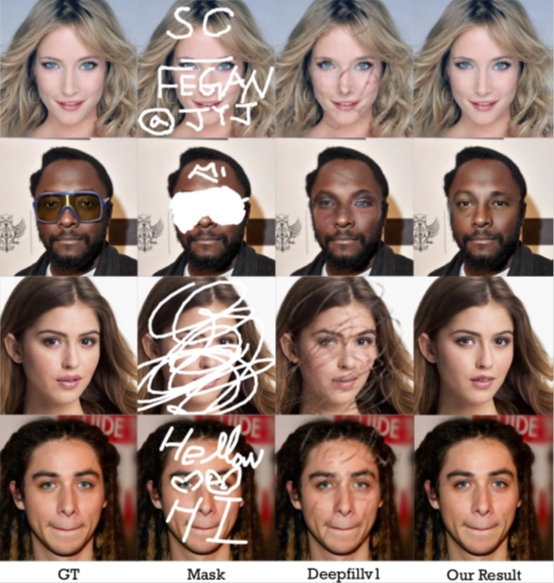 图6.与CelebA-HQ验证集上的Deepfillv1 [18]的定性比较。
我们首先将我们的结果与Coarse-Refined结构网络和U-net结构网络进行了比较。在Deepfillv2 [17]中，它表明Coarse-Refined结构和上下文注意模块对于生成是有效的。但是，我们测试了Coarse-Refined结构网络，并注意到精炼阶段使输出模糊。我们发现其原因是因为精炼网络输出的L1损失总是小于粗网络。粗网络通过使用不完整输入生成恢复区域的粗略估计。然后将该粗略图像传递到精炼网络。这种设置允许精细网络学习地面实况和粗略恢复的不完整输入之间的转换。为了通过卷积运算实现这种效果，使输入数据变模糊 被用作其他更复杂训练方法的变通方法。它可以改善棋盘格，但需要大量的记忆/内存？和时间进行训练。图4显示了我们的系统关于粗细结构网络的结果。
The system in FaceShop [12] has shown difficulty in modifying the huge erased image like whole hair regions. FaceShop [12]中的系统显示出难以修改像整个头发区域那样的巨大擦除的图像。
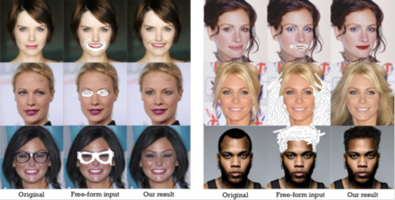
图7.来自我们系统的面部图像编辑结果。 它表明我们的系统可以正确地改变面部的形状和颜色。 它还表明它可以用于改变眼睛的颜色或擦除不必要的部分。 特别是右下角的两个结果表明我们的系统也可以用于新的发型修饰。
由于感知和风格损失，我们的系统在这方面表现更好。 图5显示了有和没有VGG损失的结果。 我们还与最近的研究Deepfillv1 [18]进行了比较，其中发布了测试系统。 图6显示我们的系统在结构和形状质量方面使用任意形状的蒙版产生更好的结果。
##4.2. Face Image Editing and Restoration
图7显示了草图和颜色输入的各种结果。它表明我们的系统允许用户直观地编辑脸部图像功能，如发型，脸型，眼睛，嘴巴等。即使整个头发区域被删除，我们的系统一旦提供了用户草图它就能够产生适当的结果。用户可以使用草图和颜色直观地编辑图像，同时网络可以容忍小的绘图错误。用户可以通过输入草图和颜色直观地修改面部图像，以获得逼真地反映阴影和形状的合成图像。图9显示了验证数据集的一些结果，它显示即使用户进行了大量修改，用户也可以获得的高质量合成图像在提供足够的用户输入情况下。此外，为了检查网络对学习所用数据集的依赖性，我们尝试输入所有区域的擦除图像。与Deepfillv1[18]相比，Deepfillv1会产生模糊的脸部图像，但我们的SC-FEGAN会产生模糊的头发图像（参见图10）。这意味着，如果没有草图和颜色等附加信息，面部元素的形状和位置具有一定的依赖值。因此，除非在期望的方向上修复图像，否则不需要提供附加信息。此外，即使输入图像被完全擦除，我们的SC-FEGAN也可以在仅具有草图和彩色任意形状输入的情况下生成人脸图像（参见图10）。
##4.3. Interesting results
由GAN生成的图像结果通常显示对训练数据集的高依赖性。 Deepfillv2 [17]使用相同的数据集CelebA-HQ，但仅使用真实图像来制作草图数据集。 在Faceshop [12]中，AutoTrace [15]删除了数据集图像中的小细节。 在我们的研究中，我们将HED应用于所有区域，并通过安排它来扩展遮蔽覆盖？遮盖区域，我们能够获得产生面部图像和耳环的特殊结果。 图8显示了这些选择的有趣结果。 这些例子表明，即使对于小输入，我们的网络也能够学习小细节并产生合理的结果。
#5. Conclusions
在本文中，我们提出了一种新颖的图像编辑系统，用于任意形状的蒙版，草图，颜色输入，它基于具有新颖GAN损失的端到端可训练生成网络。 我们发现，与其他研究相比，我们的网络架构和损失函数显著改善了修复效果。 我们基于celebA-HQ数据集的高分辨率图像对我们的系统进行了训练，并在许多情况下显示了各种成功和逼真的编辑结果。 我们已经证明，我们的系统能够一次性修改和恢复大区域，并且只需要用户付出最小的努力就可以产生高质量和逼真的结果。
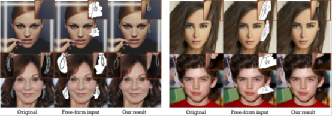
Figure 8. 我们的关于编辑耳环特殊 结果
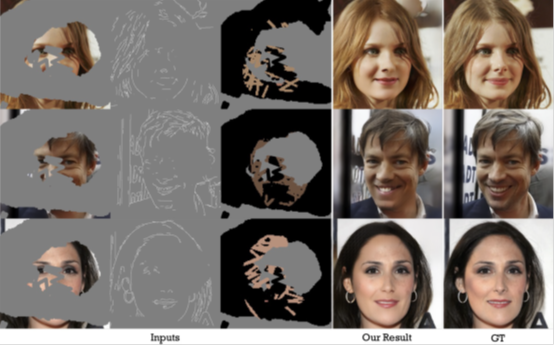
图9.我们关于面部修复的结果。 如果给出足够的输入信息，即使很多区域被删除，我们的系统也可以令人满意地恢复脸部。
 图10.关于全区域修复的结果。 在左侧，它显示Deepfillv1 [18]和SC-FEGAN关于完全擦除的图像的结果。 在右侧，它表明SC-FEGAN可以像翻译一样工作。 它只能通过草图和颜色输入生成面部图像。
图10.关于全区域修复的结果。 在左侧，它显示Deepfillv1 [18]和SC-FEGAN关于完全擦除的图像的结果。 在右侧，它表明SC-FEGAN可以像翻译一样工作。 它只能通过草图和颜色输入生成面部图像。
References [1] M. Abadi, P. Barham, J. Chen, Z. Chen, A. Davis, J. Dean, M. Devin, S. Ghemawat, G. Irving, M. Isard, et al. Tensorflow: a system for large-scale machine learning. In OSDI, volume 16, pages 265–283, 2016. 6
[2] Y. Choi, M. Choi, M. Kim, J.-W. Ha, S. Kim, and J. Choo. Stargan: Unified generative adversarial networks for multidomain image-to-image translation. In The IEEE Conference on Computer Vision and Pattern Recognition (CVPR), June 2018. 3
[3] L. A. Gatys, A. S. Ecker, and M. Bethge. Image style transfer using convolutional neural networks. In Proceedings of the IEEE Conference on Computer Vision and Pattern Recognition, pages 2414–2423, 2016. 1
[4] I. Gulrajani, F. Ahmed, M. Arjovsky, V. Dumoulin, and A. C. Courville. Improved training of wasserstein gans. In Advances in Neural Information Processing Systems, pages 5767–5777, 2017. 6
[5] S. Iizuka, E. Simo-Serra, and H. Ishikawa. Globally and locally consistent image completion. ACM Transactions on Graphics (TOG), 36(4):107, 2017. 1, 3, 4
[6] P. Isola, J.-Y. Zhu, T. Zhou, and A. A. Efros. Image-to-image translation with conditional adversarial networks. CVPR, 2017. 2
[7] J. Johnson, A. Alahi, and L. Fei-Fei. Perceptual losses for real-time style transfer and super-resolution. In European Conference on Computer Vision, pages 694–711. Springer, 2016. 5
[8] T. Karras, T. Aila, S. Laine, and J. Lehtinen. Progressive growing of gans for improved quality, stability, and variation. arXiv preprint arXiv:1710.10196, 2017. 3, 4
[9] Y. Li, S. Liu, J. Yang, and M.-H. Yang. Generative face completion. In The IEEE Conference on Computer Vision and Pattern Recognition (CVPR), volume 1, page 3, 2017. 1, 3, 4
[10] G. Liu, F. A. Reda, K. J. Shih, T.-C. Wang, A. Tao, and B. Catanzaro. Image inpainting for irregular holes using partial convolutions. arXiv preprint arXiv:1804.07723, 2018.4
[11] T. Miyato, T. Kataoka, M. Koyama, and Y. Yoshida. Spectral normalization for generative adversarial networks. arXiv preprint arXiv:1802.05957, 2018. 5
[12] T. Portenier, Q. Hu, A. Szabo, S. Bigdeli, P. Favaro, and M. Zwicker. Faceshop: Deep sketch-based face image editing. arXiv preprint arXiv:1804.08972, 2018. 2, 3, 4, 6, 7
[13] O. Ronneberger, P. Fischer, and T. Brox. U-net: Convolutional networks for biomedical image segmentation. In International Conference on Medical image computing and computer-assisted intervention, pages 234–241. Springer, 2015. 2, 3, 4
[14] O. Russakovsky, J. Deng, H. Su, J. Krause, S. Satheesh, S. Ma, Z. Huang, A. Karpathy, A. Khosla, M. Bernstein, et al. Imagenet large scale visual recognition challenge. International Journal of Computer Vision, 115(3):211–252, 2015. 5
[15] M.Weber. Autotrace, 2018. http://autotrace.sourceforge.net. 3, 7
[16] S. ”Xie and Z. Tu. Holistically-nested edge detection. In Proceedings of IEEE International Conference on Computer Vision, 2015. 3
[17] J. Yu, Z. Lin, J. Yang, X. Shen, X. Lu, and T. S. Huang. Free-form image inpainting with gated convolution. arXiv preprint arXiv:1806.03589, 2018. 2, 3, 4, 6, 7
[18] J. Yu, Z. Lin, J. Yang, X. Shen, X. Lu, and T. S. Huang. Generative image inpainting with contextual attention. arXiv preprint arXiv:1801.07892, 2018. 3, 6, 7, 9
[19] R. Zhang, J.-Y. Zhu, P. Isola, X. Geng, A. S. Lin, T. Yu, and A. A. Efros. Real-time user-guided image colorization with learned deep priors. arXiv preprint arXiv:1705.02999, 2017. 2, 3
[20] Y. Zhao, B. Price, S. Cohen, and D. Gurari. Guided image inpainting: Replacing an image region by pulling content from another image. arXiv preprint arXiv:1803.08435, 2018. 2
[21] J.-Y. Zhu, T. Park, P. Isola, and A. A. Efros. Unpaired imageto- image translation using cycle-consistent adversarial networkss. In Computer Vision (ICCV), 2017 IEEE International Conference on, 2017. 2